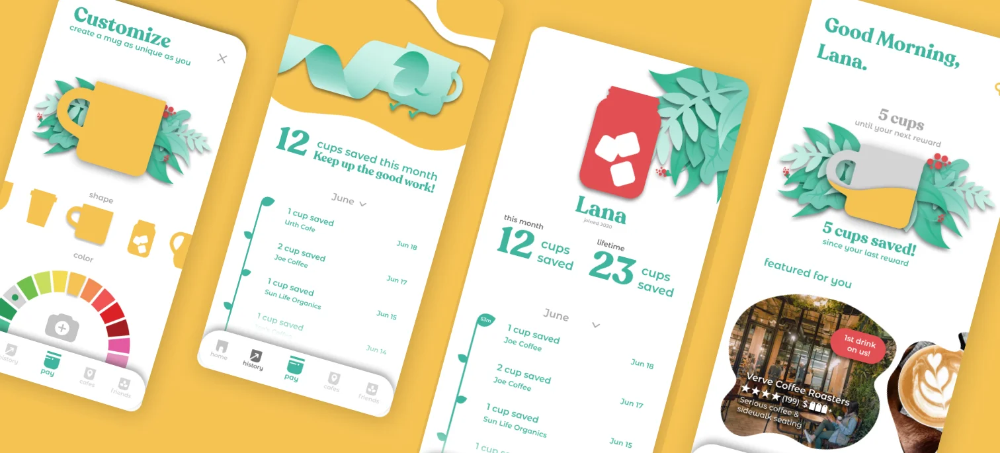
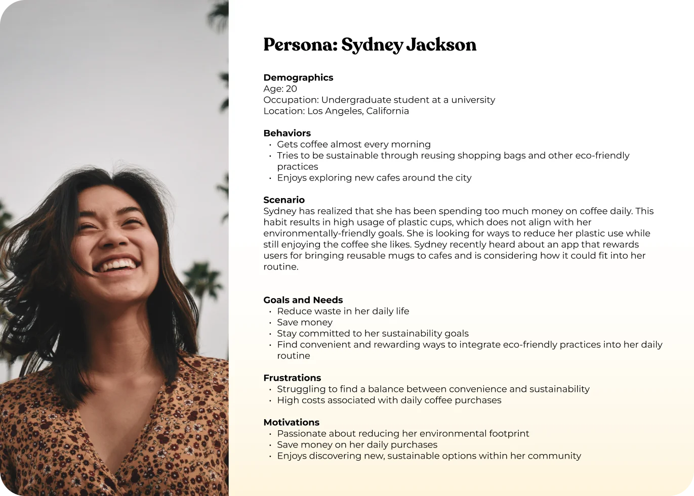
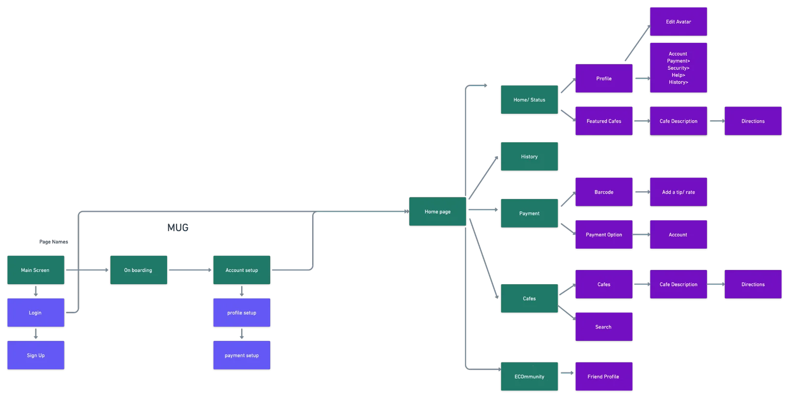
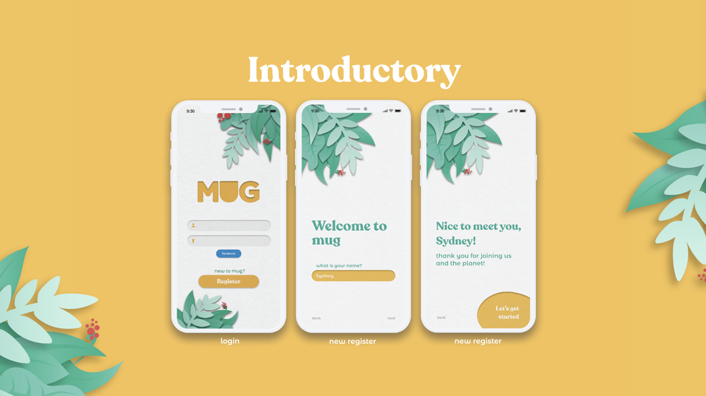
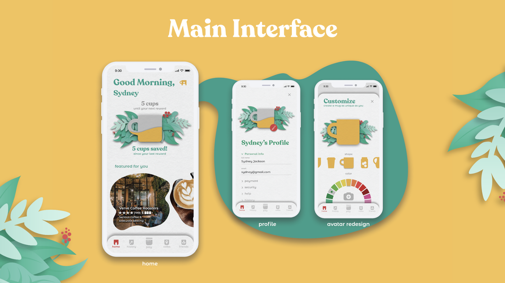
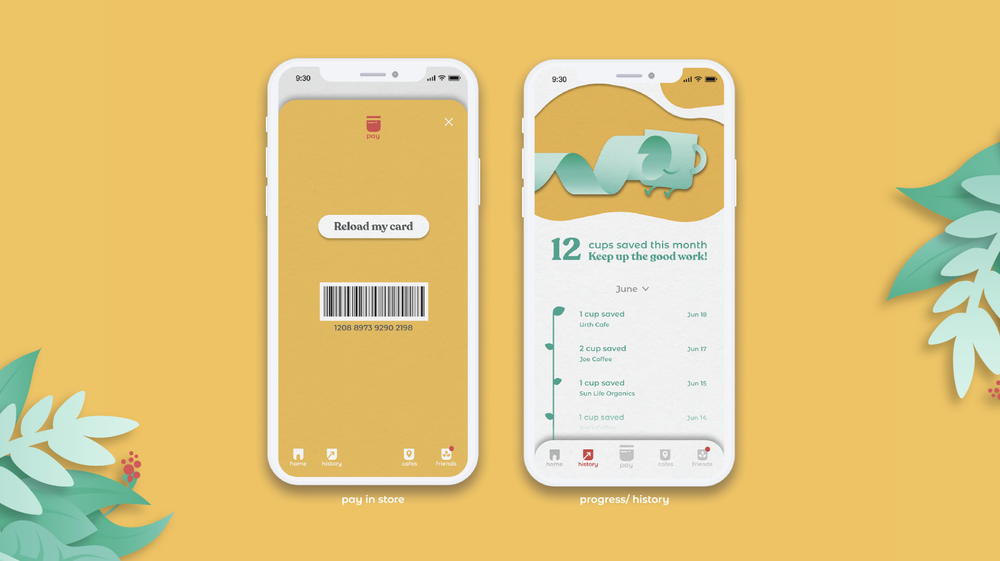
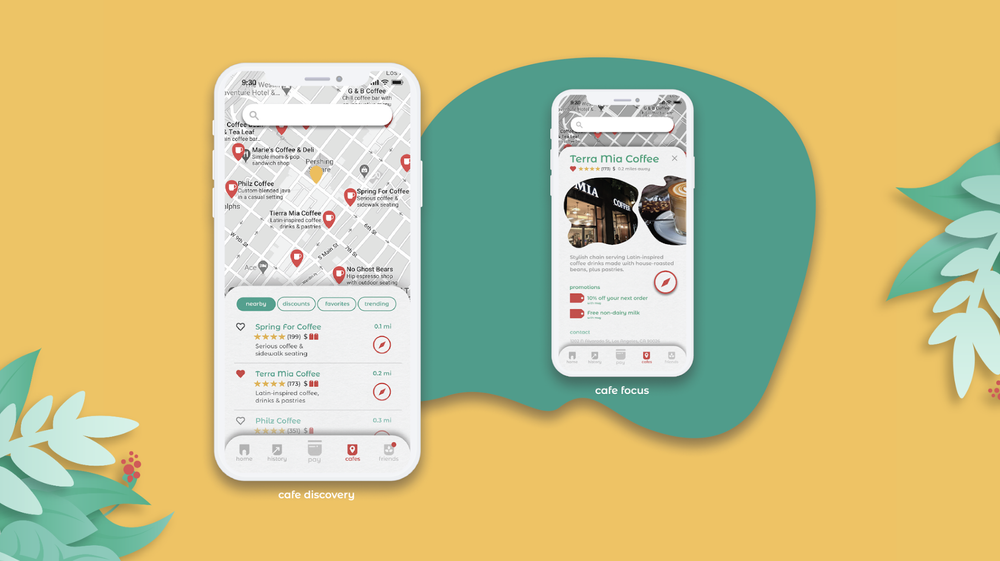
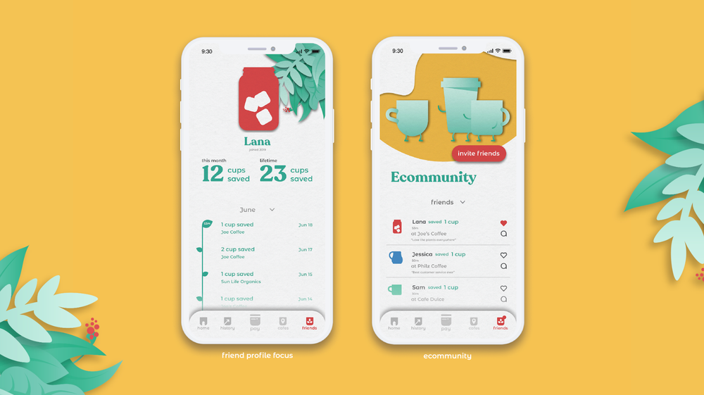

A concept app that rewards people for skipping the single-use cup at local cafés — no branded bottle to buy, any mug counts. A four-person team project: survey, flows, brand, and three animated prototypes in three months.
ROLEProduct designer
TEAM4 people · class project
TIMELINE3 months (one semester) · [ADD: year]
TOOLSFigma · Whimsical · Qualtrics
What it isA rewards app for bringing a reusable mug to local cafés. Unlike competitors, no purchase-gated cup: any mug counts.
My partI developed the guiding persona from our survey and created the brand identity end to end. Survey, flows, and wireframes were shared team work. [ADD: which final screens and prototypes are yours — this is the first thing reviewers ask about group work]
StatusUnshipped concept Wireframes tested with users; the hi-fi design was never tested or launched. Open questions listed at the end.
HOW TO READ THIS PAGE — artifacts carry disclosure labels: MEASURED real, checkable data · RETROSPECTIVE made after the project to document reasoning · SIMULATED illustrative, no real participants · PROPOSED a goal or plan, never an achieved result.

WHY PEOPLE SKIP THE REUSABLE CUPTOP 3 OF 60 SURVEYED
35%
FORGET TO BRING ONE
21%
SEE NO REASON TO
13%
DON'T HAVE TIME
MEASURED The three most-cited barriers from our Qualtrics survey of 60 college students who don't use reusable cups. [ADD: the remaining 31% breakdown, or link the survey summary]
OVERVIEW
Four of us spent a semester on a cause we cared about: cutting single-use cup waste in a way that also helps local cafés compete with the chains' loyalty apps. The bet: people don't need convincing that waste is bad — they need the sustainable choice to be the convenient one.
RESEARCH
The survey reframed the problem for us. Two of the top three barriers are practical (forgetting, hurry) — but the second-biggest, "see no reason to," is motivational. That split shaped the concept: reminders and speed fix the practical half, and rewards give the indifferent 21% a reason that isn't ideology.
“How might we make being sustainable the convenient choice, not the extra chore?”
THE HMW THAT GUIDED THE DESIGN
PERSONA
From the survey I developed our guiding persona: Sydney, a student who grabs coffee most mornings, usually in a hurry, fluent in apps like Starbucks' — motivated by time and money first, sustainability second. Every trade-off in the app defers to her convenience.

PersonaSydney — synthesized from the survey; restyled in the final brand for presentation.
JOURNEY
The journey map follows Sydney's decision to change the habit — she defines the problem, compares options, negotiates with herself, and finally commits — and marks where an app can intervene at each stage: reminders when resolve is fresh, progress tracking when it fades, rewards at the register where the habit either sticks or doesn't.
Journey mapA habit-adoption journey, not a day-in-the-life — the intervention points are where motivation dips.
IDEATION
A competitive scan across coffee, rewards, and reusability apps showed the gap: everyone rewarded buying; nobody rewarded bringing. We mapped flows and wireframes around six features:
Accounts that track every cup saved, over time and per café
A social feed so friends can see and nudge each other's savings
Saved payment for faster ordering and instant discounts
Custom avatars — a personal mug, made yours
A barcode front and center — the register moment is the whole game
Recommended local cafés, to spread traffic beyond the chains
Competitive scanThe two findings that mattered: rewards gated behind branded cups, and no app pointing traffic at local shops.

Sitemap & flowPayment and barcode sit one tap from home — the queue is no place for navigation.WireframesFirst pass — this version still had gift-card reloads, which testing killed (below).
WIREFRAME TEST
We tested an interactive wireframe with users [ADD: how many participants, how recruited]. The clearest signal: even participants with less-sustainable habits were interested once the rewards were concrete — incentives reached people that ideals didn't. Two changes came out of the sessions:
"Sendable links with first-time promos would get more people to download it."
PARTICIPANT, WIREFRAME TEST · WE ADDED REFERRAL LINKS
Card reloads read as a chore in testing — we cut them for direct payment.
TEAM DECISION AFTER TESTING · ONE LESS STEP AT THE REGISTER
BRAND
The brand identity was mine end to end. Greens carry the sustainability story; red is reserved for the two moments that pay the user — rewards and the barcode — so attention lands where the habit gets reinforced. Recoleta Bold for headlines (friendly, retro, café-chalkboard warmth); Montserrat for body text, with Montserrat Alternates in captions.
BrandLogo, palette, and type — tuned to feel like a good local café, not an eco-guilt app.
THE FINAL CONCEPTPROTOTYPE, IN MOTION
01
Sign up, then straight in
Social sign-in or a quick account, a short onboarding, customize your mug, and you're at the main screen.
02
Cups saved, cafés found
Home counts saved cups and recommends local shops; the barcode sits center-stage for the register moment.
03
ECOmmunity
The social layer: friends' saves and streaks, plus the cafés they love. Accountability without the lecture.
HIGH-FIDELITY SCREENSFIGMA





OPEN QUESTIONS
Things a real launch would have to answer that a semester didn't — stated here because unacknowledged gaps read worse than acknowledged ones:
Verification. "Any mug counts" is the pitch and the hole: how does a busy barista verify the mug without slowing the line? We designed the customer side only.
The café economics. We claimed cafés benefit but never interviewed one. The discount has to come from somewhere.
Hi-fi validation. The wireframes were tested; the final design never was. The green-on-white text in the final screens also deserves a contrast pass.
RETROSPECTIVE The verification mechanic I'd design first — reasoned from the register flow we already had:
The customer's barcode scan already tells the register who is paying. Verification only has to answer did they bring a mug — a yes/no the barista knows the moment the cup hits the counter. So: the scan fires the discount as "pending," and a single barista-side tap (or the register's existing modifier key) confirms it. No new hardware, one extra tap, and the fraud cost of a wrong tap is one small discount — low enough that speed beats policing. What this doesn't solve: multi-register cafés and rush-hour honesty drift; both are testable in a pilot before they're worth designing for.
SIMULATED The café-side study we should have run — a concept-validation scenario showing how I'd evaluate the merchant half. No real baristas participated; profiles and quotes are illustrative:
Objective: would independent cafés fund a bring-your-own-mug discount, and can verification survive a rush? Method: 15-minute intercepts with 5 staff across 3 independent cafés (2 owners, 2 baristas, 1 shift lead), off-peak. Limitation: intercepts surface objections, not adoption behavior.
Simulated finding
Product implication
Proposed response
Confidence
Owners frame the discount as marketing spend, not margin loss — if the app demonstrably brings new faces
The café pitch must lead with discovery, not sustainability
Surface "new customers from Mug" in a merchant view
Low — needs real intercepts
Baristas reject anything adding >2–3 seconds at the register during rush
Verification must ride the existing scan
The pending-discount tap above
Medium — consistent with POS research generally
Mixed on fraud: some owners shrug ("it's a coffee discount"), others want control
Policing is a setting, not a feature
Per-café toggle: auto-approve vs. confirm
Low
"If it slows my line at 8am, I don't care what it saves."
SIMULATED BARISTA VOICE — ILLUSTRATIVE, NOT A REAL PARTICIPANT
"I'd fund 25 cents a cup if it walks students in the door."
SIMULATED OWNER VOICE — ILLUSTRATIVE, NOT A REAL PARTICIPANT
PROPOSED How success would be measured if this shipped — goals, not results:
Metric
Definition
How
Goal (not a result)
Limitation
Repeat bring-rate
% of users whose 2nd+ visit includes a mug scan
Scan events per user
The habit metric — baseline first, then grow it
Confounded by discount size
Register time delta
Seconds added per transaction at pilot cafés
Timed observation, 1 rush hour per café
≤3s or the mechanic fails
Small sample; observer effect
Café retention
Pilot cafés still active after 8 weeks
Merchant dashboard
The business-side truth test
Tiny n in a pilot
WHAT I TOOK AWAY
Incentives reached the people that ideals didn't — the clearest signal from our wireframe test, and the reason the whole app centers on rewards.
Concept statusunshipped · wireframe-tested
Cut after testingcard reloads → direct pay
Any mug countsno purchase required — verification unsolved